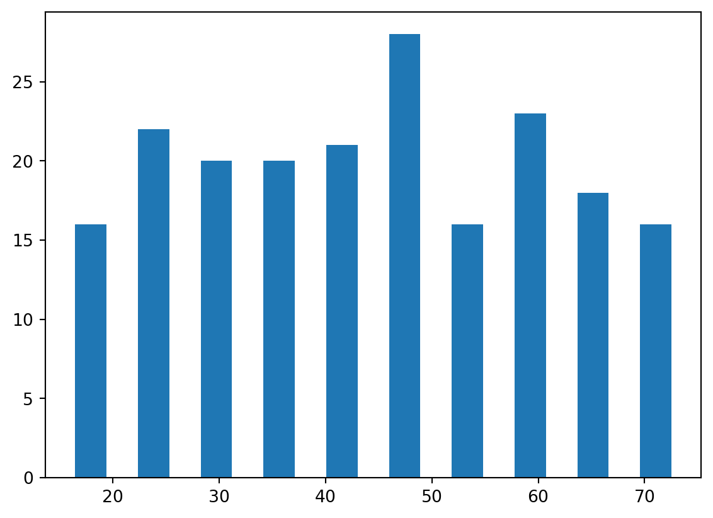

import sys
#Project requires Python 3.7 or above
assert sys.version_info >= (3, 7)
# import libraries
import pandas as pd
import matplotlib.pyplot as plt
from sklearn.model_selection import train_test_split
from sklearn.metrics import classification_report, accuracy_score, confusion_matrix, precision_recall_curve, precision_score, recall_score
from sklearn.model_selection import cross_val_predict
from sklearn.model_selection import cross_val_score
from sklearn.ensemble import RandomForestClassifier
from sklearn.feature_selection import SelectFromModelBackground
This blog post will walk through data analysis with Classification. The data set contains several data points on individuals and which drug they were administered. These data points include information of each individual’s age, sex, blood pressure, cholesterol, sodium to potassium ratio, and the drug they were administered. The goal here is to determine what factors determine which drug to administer to the individual, as well as find which factors play a big role in the drug classification. This classification will be used to predict which drug should be administered to future patients based on the factors provided.
Setup
We will first begin by checking our python version and importing the necessary libraries for this. We will use Pandas to read the csv file and manipulate its data, and matplotlib’s pyplot to display graphs and plot our data. Scikit learn (sklearn) libraries will also be imported for its metrics, model selection, finding importance of features, and the classifier.
Data
Let’s start by seeing what our data looks like.
# Read data
data = pd.read_csv("drug.csv")
print(data.shape)
data.head()(200, 6)| Age | Sex | BP | Cholesterol | Na_to_K | Drug | |
|---|---|---|---|---|---|---|
| 0 | 23 | F | HIGH | HIGH | 25.355 | DrugY |
| 1 | 47 | M | LOW | HIGH | 13.093 | drugC |
| 2 | 47 | M | LOW | HIGH | 10.114 | drugC |
| 3 | 28 | F | NORMAL | HIGH | 7.798 | drugX |
| 4 | 61 | F | LOW | HIGH | 18.043 | DrugY |
The dimensions of the data is (200, 6), which means that the data has 6 columns per each individual: Age, Sex, Blood Pressure (BP), Cholesterol, Sodium to Potassium Ratio (Na_to_K), and Drug. There are 200 entries in the data set, which is generally considered a low amount of data to have, but for our purposes we will make do with this. We will see how these factors of each individual play a role in what drug they are administered.
Plotting the Data
To gain a better understanding of the data, we can visualize it by plotting some of the factors.
Plotting the Data
Let’s first look at the different types of drugs that were administered and their frequencies in the data set.
plt.hist(data['Drug'], rwidth=0.5)(array([91., 0., 16., 0., 0., 54., 0., 23., 0., 16.]),
array([0. , 0.4, 0.8, 1.2, 1.6, 2. , 2.4, 2.8, 3.2, 3.6, 4. ]),
<BarContainer object of 10 artists>)It appears that Drug Y was the most frequently administered drug, with Drug X coming in second. In total, there were 5 types of drugs that were administered, but the remaining three were administered significantly less than Drug Y and Drug X.
plt.hist(data['Age'], rwidth=0.5)(array([16., 22., 20., 20., 21., 28., 16., 23., 18., 16.]),
array([15. , 20.9, 26.8, 32.7, 38.6, 44.5, 50.4, 56.3, 62.2, 68.1, 74. ]),
<BarContainer object of 10 artists>)
The age groups seem to roughly evenly distributed. There appears to be an equal amount of individuals below 50 and above 50, and no significant outlying age group.
Let’s try plotting Age against the Drug type to see what information that may provide.
plt.xlabel('Drug Type')
plt.ylabel('Age')
plt.scatter(data['Drug'], data['Age'])
plt.show()This somewhat matches our expectations, as we see more data points for Drug Y and Drug X since those were the most frequently administered drugs. Drug C has very few points and is roughly evenly spread out among all age groups. Drug A seems to be only administered for individuals below 50, while Drug B seems to be only administered for individuals above 50.
Let’s try a similar plot, but this time plotting the Sodium to Potassium ratio against the Drug Type.
plt.xlabel('Drug Type')
plt.ylabel('Sodium to Potassium Ratio')
plt.scatter(data['Drug'], data['Na_to_K'])
plt.show()Those with a ratio of over 15 were always administered Drug Y. If the ratio was below 15, then any one of the other four drug types were given. This indicates that the Sodium to Potassium ratio plays a huge role in classifying which drug should be applied.
Performing the Classification
Now that we have looked at a few data points and gotten a better understanding of what we are looking for and what to expect, we can begin preparing the data to be placed into our Classification model. The data will of course need to be split into training and testing sets, for which the standard 80-20 convention will be followed.
# Prepare data and do split data into training and test groups (Using standard 80-20 split)
X = data[['Age', 'Sex', 'BP', 'Cholesterol', 'Na_to_K']]
X = pd.get_dummies(X) # Convert categorical vars to indicator vars
Y = data['Drug']
X_train, X_test, Y_train, Y_test = train_test_split(X, Y, train_size=0.8, test_size=0.2, shuffle=True, random_state=42)
print("X-Training Set Dimensions: ", X_train.shape)
print("X-Test Set Dimensions: ", X_test.shape)
print("Y-Training Set Dimensions: ", Y_train.shape)
print("Y-Test Set Dimensions: ", Y_test.shape)X-Training Set Dimensions: (160, 9)
X-Test Set Dimensions: (40, 9)
Y-Training Set Dimensions: (160,)
Y-Test Set Dimensions: (40,)We use the Pandas get_dummies() method to convert any categorical variables that we have into 1/0 indicator values. For example, our data would indicate Cholesterol as either HIGH, NORMAL, or LOW. This pandas method will split the data into three new categories called BP_HIGH, BP_NORMAL, and BP_Low. In these categories, a 1 will indicate that this is true for the indivdual, and a 0 will indicate that it is not true. This is applied for all parts of the data set.
# Display what Pandas get_dummies has done to the data set.
X.head()| Age | Na_to_K | Sex_F | Sex_M | BP_HIGH | BP_LOW | BP_NORMAL | Cholesterol_HIGH | Cholesterol_NORMAL | |
|---|---|---|---|---|---|---|---|---|---|
| 0 | 23 | 25.355 | True | False | True | False | False | True | False |
| 1 | 47 | 13.093 | False | True | False | True | False | True | False |
| 2 | 47 | 10.114 | False | True | False | True | False | True | False |
| 3 | 28 | 7.798 | True | False | False | False | True | True | False |
| 4 | 61 | 18.043 | True | False | False | True | False | True | False |
Performing Classification - Model Analysis
We can now go through with the Classification, for which we will use the Random Forest Classification Algorithm. We will do a cross validation to see the expected level of fit for our model to the data set.
# Use Random Forest for Classification
forest = RandomForestClassifier(n_estimators=200, random_state=42)
cross = cross_val_predict(forest, X_train, Y_train, cv=None, method="predict_proba")
cross[:5]array([[0.01 , 0.03 , 0. , 0.03 , 0.93 ],
[0. , 0. , 0.005, 0. , 0.995],
[0.01 , 0.01 , 0. , 0. , 0.98 ],
[0.96 , 0. , 0. , 0.02 , 0.02 ],
[0.99 , 0. , 0. , 0. , 0.01 ]])We can also find the cross validation score to understand the model’s performance better and how accurate it is. The cross_val_score method will be used, and we will use the default cross validation (cv) of 5, so this model is trained/tested on 5 differents subsets of the data.
cross_val_score(forest, X_train, Y_train, scoring='accuracy')array([1. , 1. , 1. , 0.96875, 1. ])The model seems to work really well, as our accuracy scores are very high for each section.
Performing Classification - Random Forest
We can now go ahead and fit our model to the Random Forest model we plan to use.
forest.fit(X_train, Y_train)
predict = forest.predict(X_test)We will now apply the Precision/Recall method using sklearn’s metrics precision and recall to determine how well our Classification model did. The precision will compare the number of true positive and false positives, and the recall will compare true positives and false negatives. From sklearn’s metrics we will also find the accuracy score to see how accurate our model is.
# precision = tp / (tp + fp)
print("Precision Scores: ", precision_score(Y_test, predict, average=None))
# recall = tp / (tp + fn)
print("Recall Scores: ", recall_score(Y_test, predict, average=None))
print("Random Forest Model Accuracy: ", accuracy_score(Y_test, predict))Precision Scores: [1. 1. 1. 1. 1.]
Recall Scores: [1. 1. 1. 1. 1.]
Random Forest Model Accuracy: 1.0For every performance metric our model shows a 1.0, indicating it is 100% accurate to compared to the data set. This means that our model produces no false positives or false negatives. The Random Forest classifier fits the data very well.
We can also look at it side-by-side through a table, and see how the model predicted performance comapres to the actual performance.
# Side by Side comparison
pd.DataFrame({"Actual Performance: " : Y_test[:10], "Model Predicted Performance" : predict[:10]})| Actual Performance: | Model Predicted Performance | |
|---|---|---|
| 95 | drugX | drugX |
| 15 | DrugY | DrugY |
| 30 | drugX | drugX |
| 158 | drugC | drugC |
| 128 | DrugY | DrugY |
| 115 | DrugY | DrugY |
| 69 | DrugY | DrugY |
| 170 | drugX | drugX |
| 174 | drugA | drugA |
| 45 | drugX | drugX |
Feature Importance
Now that we see how well our model works, let’s look at which factors, or features, our Random Forest actually used to make decisions. As we noticed at the beginning, there were some features that appeared to heavily influence which drug was chosen.
We will use sklearn’s feature selection capabilities for this through the SelectFromModel option. This will give us the ability to look at what features were used.
# Let's look at which features were the most important. Using select from model
model = SelectFromModel(RandomForestClassifier(n_estimators=200, random_state=42))
model.fit(X_train, Y_train)
model.get_support()[:5]array([ True, True, False, False, True])This tells us that 3 of the 5 features given were used by the model to perform the classification. This is useful, but we also want to know exactly which 3 features were used, and will have to display that.
# See which features were used by Random Forest
features = X_train.columns[(model.get_support())]
print(features)Index(['Age', 'Na_to_K', 'BP_HIGH'], dtype='object')The 3 features used were Age, Sodium to Potassium ratio, and BP_HIGH. These 3 features had the biggest impact in decision making, so they were used by the classifier. As we analyzed above from the plots, we saw how Age and the Sodium to Potassium ratio did seem to affect which drug was administered, so this was expected.
Let’s plot the distribution of our features importance, to see how important each was. We will set our nlargest to 3, so that our 3 main features will be displayed.
pd.Series(model.estimator_.feature_importances_, index=X.columns).nlargest(3).plot(kind='barh')<Axes: >It appears that the Sodium to Potassium ratio was by far the most important factor in the model’s classification, when it comes to deciding which drug to administer.